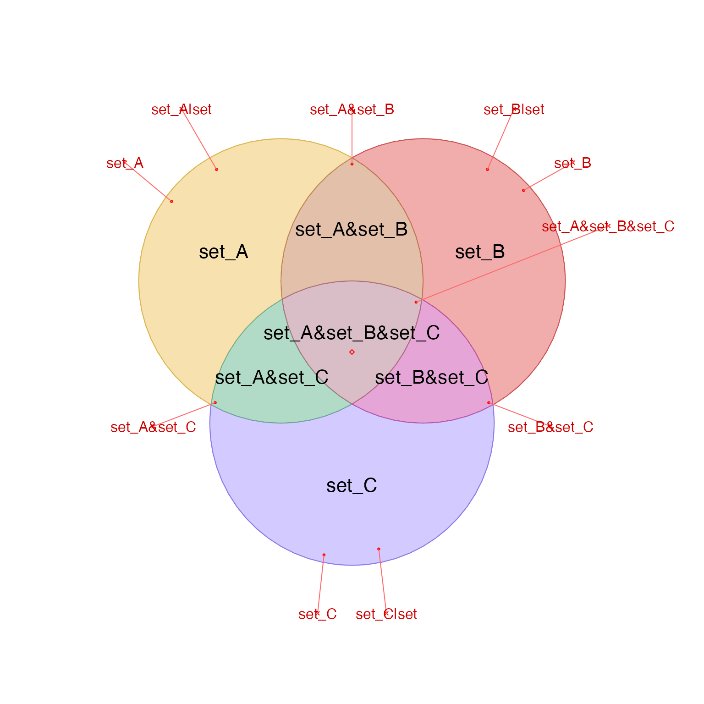

Position labels outside JamPolygon
Usage
label_outside_JamPolygon(
jp,
which_jp = NULL,
center = NULL,
buffer = -0.1,
distance = 0.1,
center_method = c("bbox", "label", "none"),
vector_method = c("farthest", "label"),
segment_method = c("nearest", "vector"),
min_degrees = 15,
relative = TRUE,
y_snap_percent = 5,
seed = 123,
debug = FALSE,
do_plot = FALSE,
verbose = FALSE,
...
)Arguments
- jp
JamPolygon- which_jp
integerorNULL; whenwhich_jpcontains one or moreintegervalues, they refer to rows injp, and each will be analyzed in sequence. Whenwhich_jp=NULLthen all the polygons injpwill be analyzed in sequence.- center
numericvector or matrix with two values indicating the center position.In all cases, the overall center is defined using
center_method, then it is adjusted bycenterwhen defined.When
center=NULLthecenter_methodvalue is used.When
centeris provided andrelative=TRUE(default), the overall center position is adjusted usingcenterinterpreted as relative values.When
relative=FALSEthe valuescenterare added to the overall center position. To usecenteras absolute coordinates, selectcenter_method="none".
- buffer
numericbuffer, default -0.1, inside the polygon used to draw a line segment connecting the label to the appropriate polygon.- distance
numericvalue, default 0.1, indicating the distance from the perimiter ofjpto place labels. This value is thebufferforbuffer_JamPolygon().- center_method
characterstring indicating the method to determine thecenter:"label"uses the mean x,y coordinate of all the polygon label positions;"bbox"uses the mean x,y coordinate of the bounding box that encompasses the polygons."none"uses the origin 0,0 and is intended mainly to allowcenterto be used as absolute coordinates.
The effect is to extend outer labels radially around this center point. Using the mean label position with
center_method="label"is helpful because it ensures labels are extended in all directions even when most labels are in one upper or lower section of the polygons.- vector_method
characterstring indicating the vector fromcenteroutward, to define the position outside the polygons.'farthest'(default) aims to the farthest point from center.'label'aims through the default label position in each polygon.
- segment_method
characterstring indicating how to connect a line segment from the outside label, back to the polygon. The line segment ends inside the polygon, defined bybuffer.'nearest'(default) points to the nearest border.'label'points toward the default label position inside the polygon.
- min_degrees
numeric, default 15, minimum degrees spacing to impose between label positions, oriented around the center. When there are more labels than can be divided, the threshold is automatically lowered proportionally.- relative
logicalwhether distance and buffer are relative to plot dimensions, default TRUE.- y_snap_percent
numericpercent of the plot dimensions used to decide whether to "snap" two labels to the same y-axis value. Default 5 means any labels within 5 percent of the plot dimensions of one or more other labels will use the mean y-axis value, thereby helping align labels by height where appropriate.- seed
numericused to set the random seed for reproducibility, viaset.seed(). Default is 123.- debug
logicalwhether to print detailed debug information.- do_plot
logicalwhether to create a plot with the inputjpand corresponding labels and line segments assigned towhich_jp. Default is FALSE.- verbose
logicalwhether to print verbose output.- ...
additional arguments are ignored.
Details
The purpose is to arrange labels outside a JamPolygon that
contains one or more parts. In general, it works best to supply
the entire JamPolygon even when labeling a subset of parts,
using which_jp to select the parts to label,
since it defines many coordinates relative to the overall
geometry.
There are several strategies used, from experiences trying to label Euler diagrams in automated way. The general steps:
Define center.
The default uses the center of the bounding box.
An alternative is the mean position of each polygon internal label, which is effective when most labels are skewed to one side.
Draw lines from center, through the polygon to label, outside some distance.
The default chooses the farthest point from center for each polygon.
An alternative is to use the polygon internal label position.
Define a line segment from the outside point back to the polygon, inside by some distance.
The default uses the nearest point on the polygon to the outside point.
An alternative directs the line segment toward the internal label for each polygon.
The defaults are quite effective, however some unusual arrangements or shapes may warrant trying the other options.
When calling venndir(), the ellipses '...' are passed through to
this function label_outside_JamPolygon() to customize these options.
See also
Other JamPolygon:
JamPolygon-class,
[,JamPolygon,ANY,ANY,ANY-method,
add_orientation_JamPolygon(),
area_JamPolygon(),
bbox_JamPolygon(),
buffer_JamPolygon(),
check_JamPolygon(),
eulerr_to_JamPolygon(),
farthest_point_JamPolygon(),
find_venn_overlaps_JamPolygon(),
has_point_in_JamPolygon(),
intersect_JamPolygon(),
label_fill_JamPolygon(),
label_segment_JamPolygon(),
labelr_JamPolygon(),
minus_JamPolygon(),
nearest_point_JamPolygon(),
nudge_JamPolygon(),
plot.JamPolygon(),
point_in_JamPolygon(),
polyclip_to_JamPolygon(),
polygon_circles(),
polygon_ellipses(),
sample_JamPolygon(),
split_JamPolygon(),
union_JamPolygon(),
update_JamPolygon()
Examples
v <- venndir(make_venn_test(n_sets=3), do_plot=FALSE)
jps <- v@jps
# plot visual summary
label_outside_JamPolygon(jps, do_plot=TRUE)
